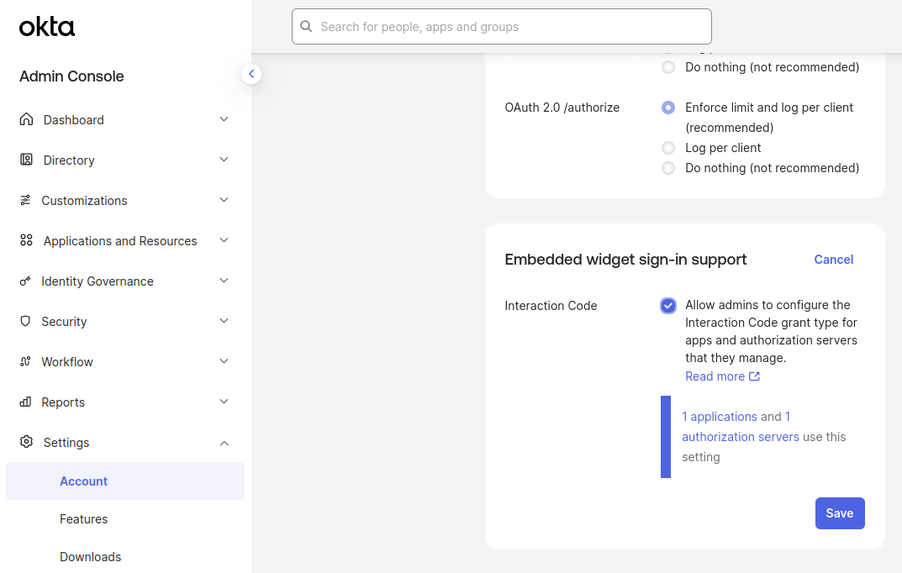
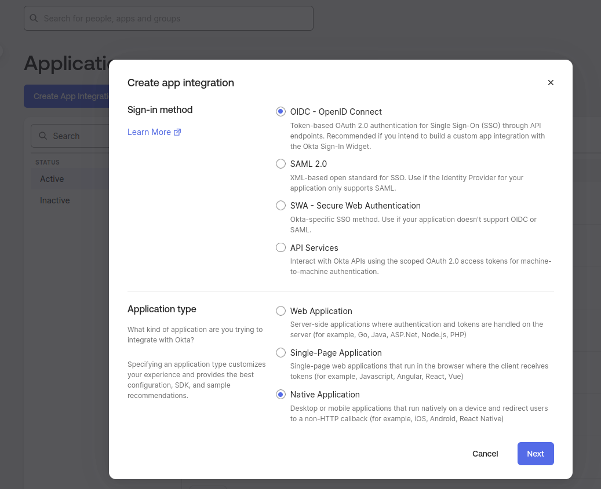
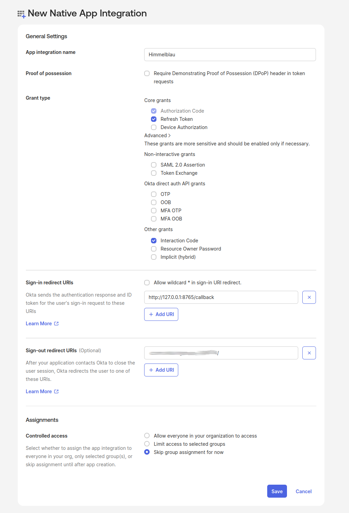
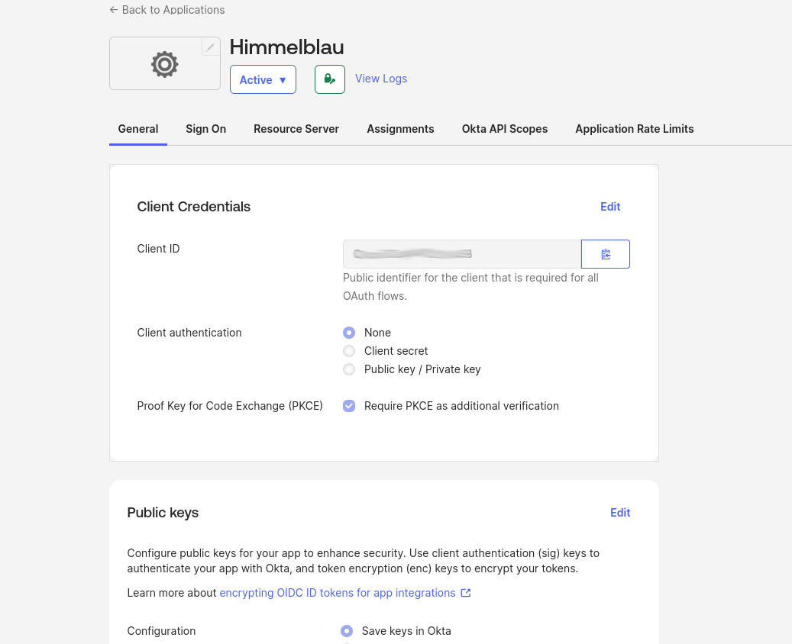
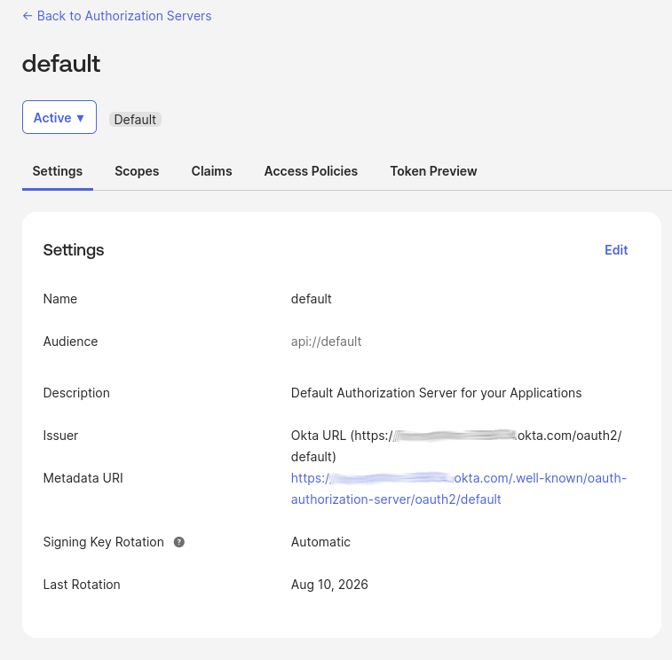
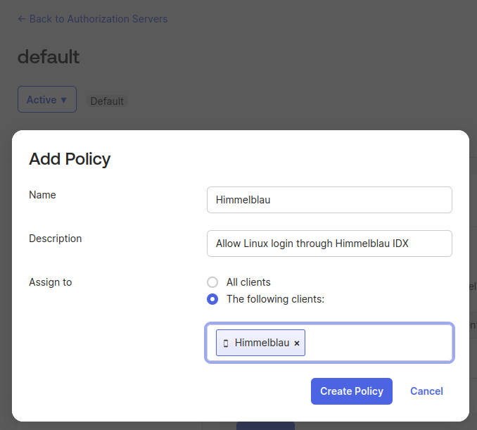
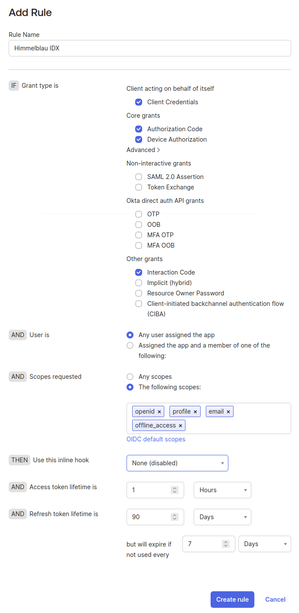
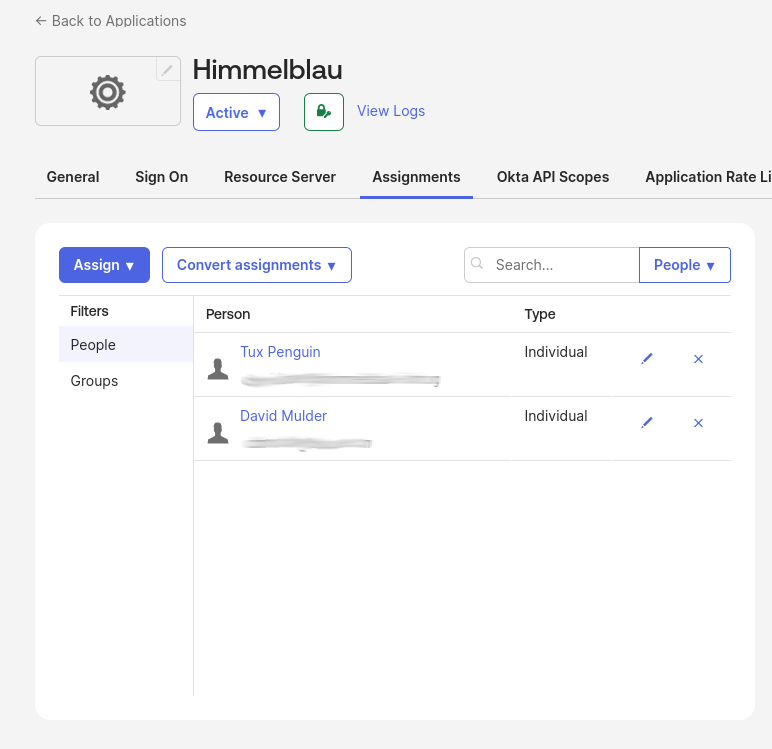
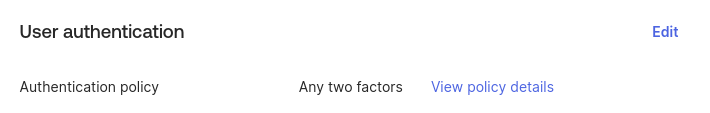

Using Himmelblau with Okta
This guide walks IT administrators through configuring an Okta application and a Linux host for native Okta IDX login. Users complete supported credential and MFA prompts through the Linux login interface. Okta calls the grant used by this flow Interaction Code.
Experimental
Native Okta IDX login is available only in nightly builds containing this feature until Himmelblau 5.0 is released.
Prerequisites
- An Okta Identity Engine organization.
- Permission to manage applications and authorization server policies. Enabling Interaction Code for the organization requires Super Admin permission.
- Access to the default custom authorization server. Okta includes this in Integrator Free Plan organizations; custom authorization servers require API Access Management in production. See Okta's authorization server guidance.
- A test user with existing MFA enrollment and an authentication policy that permits a supported native method, such as an Okta Verify push or verification code.
- A Linux host with Himmelblau installed, PAM and NSS configured, and HTTPS connectivity to Okta. See Installation and Configuration.
On the Downloads page, expand Advanced manual package repository instructions, select Community Nightly, and follow the instructions for your distribution.
The examples use these values. Replace the organization domain and client ID with your own:
| Value | Example |
|---|---|
| Application name | Himmelblau |
| Authorization server | default |
| Issuer URL | https://your-org.okta.com/oauth2/default |
| Client ID | YOUR_OKTA_CLIENT_ID |
| Sign-in redirect URI | http://127.0.0.1:8765/callback |
Enable Interaction Code for the Organization
In the Okta Admin Console:
- Open Settings → Account.
- Find Embedded widget sign-in support and select Edit.
- Select Interaction Code and save. If it is already selected, leave it enabled.

Enable Interaction Code for the organization before configuring the application and authorization server.
This organization setting makes Interaction Code available in application settings and authorization server rules. Despite the panel's name, it also applies to Himmelblau's native client. See Configure embedded sign-in support.
Create the Okta Application
- Open Applications and Resources → Applications. Some consoles label this Applications → Applications.
- Select Create App Integration. If offered a choice of creation experiences, choose Classic experience to access the integration wizard.
- Select OIDC – OpenID Connect as the sign-in method and Native Application as the application type, then select Next.

Create a native OIDC application for Himmelblau.
Configure the application:
| Setting | Value |
|---|---|
| App integration name | Himmelblau |
| Grant types | Retain Authorization Code, enable Refresh Token, and enable Interaction Code under Advanced |
| Sign-in redirect URIs | http://127.0.0.1:8765/callback |
| Controlled access | Select Skip group assignment for now; assign the intended users or groups below |
If Interaction Code is missing, check the organization setting from the previous section. Save the application.

Enable the application grants and register the exact callback URI used by Himmelblau.
On the application's General tab, copy the Client ID from Client Credentials. This is the value for Himmelblau's app_id; it is not the application display name. Confirm that Client authentication is None and Require PKCE as additional validation is selected. Himmelblau uses PKCE and does not use a client secret.

Copy your application's Client ID for app_id; keep public-client authentication with PKCE.
For an existing native application, edit its General Settings to enable the grants above and register the same redirect URI. Okta documents both creation and updates in its Interaction Code setup guide.
Configure the Authorization Server
Confirm the Issuer
Open Security → API → Authorization Servers and select default. On the Settings tab, confirm its issuer URL:
https://your-org.okta.com/oauth2/default

Use the Issuer value, including /oauth2/default.
Copy the complete issuer, including /oauth2/default. This is the value for Himmelblau's oidc_issuer_url.
Allow the Application and Grant
- Open the server's Access Policies tab.
-
Select a policy whose Assign to setting includes the Himmelblau application. If none exists, select Add Policy, name it
Himmelblau, provide a description, and assign it to the Himmelblau client using The following clients. Create the policy.
Assign the access policy to the Himmelblau application.
-
Edit the matching rule, or select Add Rule and name the new rule
Himmelblau IDX. - Under IF Grant type is, retain Authorization Code, expand Advanced, and select Interaction Code in Other grants.
- Under AND User is, select Any user assigned the app, or restrict the condition to the intended assigned groups.
- Ensure the scope condition allows all scopes requested by Himmelblau:
openid,profile,email, andoffline_access. If the rule uses The following scopes, include all four; an existing Any scopes condition also covers them. - Use your organization's token lifetime settings and save with Create Rule or Update Rule.

Allow Interaction Code for assigned users and the four requested scopes. The additional Client Credentials and Device Authorization selections shown are not required for native IDX login. Token lifetimes shown are examples; use your organization's settings.
Check policy and rule order: Okta evaluates them in priority order, and an earlier match may determine the result. A policy without a matching rule does not authorize the request. See Create access policies.
This access policy controls token issuance. The application's authentication policy separately controls the credentials and MFA required during login.
Assign Users and Check the MFA Policy
Return to Applications and Resources → Applications → Himmelblau:
- Open Assignments → Assign.
- Choose Assign to People or Assign to Groups.
- Assign the intended test users or group and select Done.

Confirm that the intended users or groups are assigned to the application.
See Assign app integrations for details.
On the Sign On tab, locate User authentication and check the assigned authentication policy. Use your existing MFA policy and confirm that the test user is enrolled in a method it permits.

This example uses the Any two factors policy. Follow View policy details to check your application's existing policy.
Native login can present supported prompts such as verification-code entry or approval of an Okta Verify push. A policy requiring an external browser redirect or an unsupported step must offer a supported native alternative. Configuring new authenticators is outside this guide.
Configure Himmelblau
Edit /etc/himmelblau/himmelblau.conf. Add or update these settings in the existing [global] section, preserving any other host-specific settings:
[global]
oidc_issuer_url = https://your-org.okta.com/oauth2/default
app_id = YOUR_OKTA_CLIENT_ID
oidc_force_interaction_code = true
oidc_redirect_uri = http://127.0.0.1:8765/callback
| Option | Meaning |
|---|---|
oidc_issuer_url |
The complete issuer URL from the selected authorization server. |
app_id |
The Client ID from the native application's General tab. |
oidc_force_interaction_code |
Require native IDX login and prevent fallback to device authorization or the browser orchestrator. |
oidc_redirect_uri |
The exact sign-in redirect URI registered on the application. |
With oidc_force_interaction_code = false (the default), Himmelblau probes compatible providers and can select the standard OIDC flow when native authentication is unavailable and fallback is supported. This guide sets it to true so a configuration problem cannot silently select another flow. Backend selection lasts until the daemon restarts; temporary network outages defer selection.
Native IDX login does not require the Himmelblau orchestrator or orchestrator_enabled = true.
Apply the Configuration and Test Login
Restart the services after changing the configuration:
sudo systemctl restart himmelblaud himmelblaud-tasks
Test with the assigned user's account identifier:
sudo aad-tool auth-test --name user@example.com
Replace user@example.com with the account identifier for your Okta user. Complete the credential and MFA prompts required by the policy. For example, enter the requested verification code or approve an Okta Verify push. The exact prompts depend on the user's enrolled authenticators and policy.
After the authentication test succeeds, test a Linux console or graphical login with the same user to verify PAM, NSS, and session integration. An authentication test alone does not verify the full desktop login.
Optional Local Hello PIN
When enable_hello = true (the default), a successful sign-in can lead to local Hello PIN enrollment. This is a Himmelblau credential on the Linux host. Keep Refresh Token enabled and allow offline_access so Himmelblau can obtain the refresh token needed for Hello. Follow any additional local enrollment prompts presented by the host's configuration.
Troubleshooting
| Symptom | What to check |
|---|---|
| Interaction Code is missing in the portal | Enable it under Settings → Account → Embedded widget sign-in support with Super Admin permissions. |
| Client is not authorized for the grant | Check Interaction Code at all three levels: organization, application, and matching authorization server rule. Re-enabling the organization setting does not automatically restore grants previously disabled on apps and servers. |
| No matching policy or access denied | Check application assignment, access-policy client assignment, rule users and scopes, rule priority, and the application's MFA policy. |
| Discovery fails or issuer mismatch is reported | Use the issuer shown for the selected server, including /oauth2/default, and check HTTPS connectivity. |
| Invalid client or redirect URI | Copy the Client ID from the native application. Verify public-client authentication and the exact http://127.0.0.1:8765/callback registration. |
| A device-code or browser login appears | Confirm that the installed nightly contains IDX support and oidc_force_interaction_code = true is in [global]. Restart the daemon. |
| External or unsupported authentication step | Use a supported native method permitted by the policy. The registered redirect URI does not provide a browser callback service. |
| Hello enrollment cannot complete | Check that refresh tokens and offline_access are permitted for this application and user. |
Read daemon logs with:
journalctl -u himmelblaud
For more detail, temporarily set debug = true in [global], restart himmelblaud, and repeat the test. Look for OIDC provider selection completed with selection=InteractionCode. This confirms native backend selection; the authentication test must still succeed. Restore your usual logging setting afterward.
Restart himmelblaud after correcting portal settings too, so it can repeat backend selection.